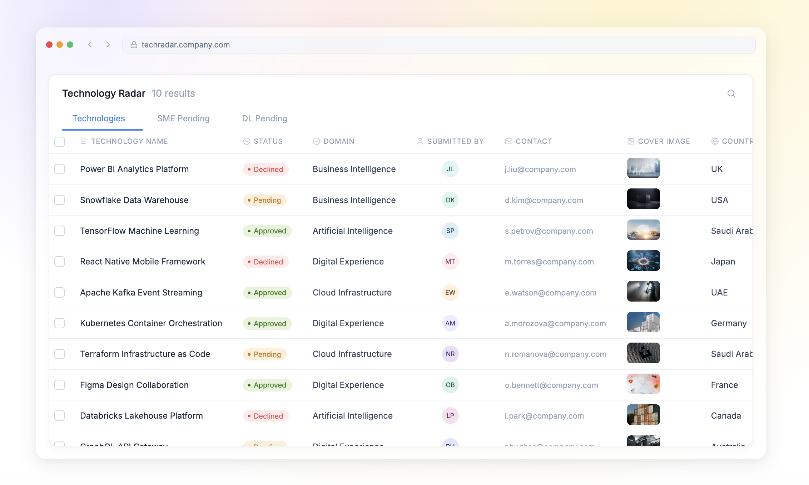
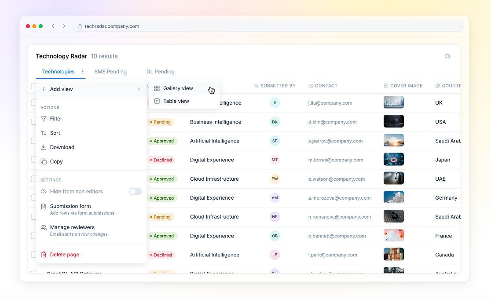
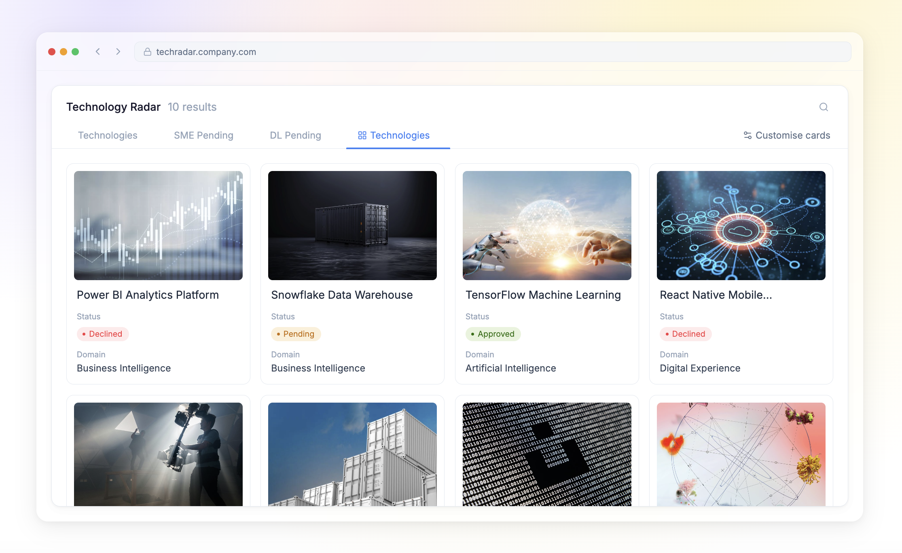
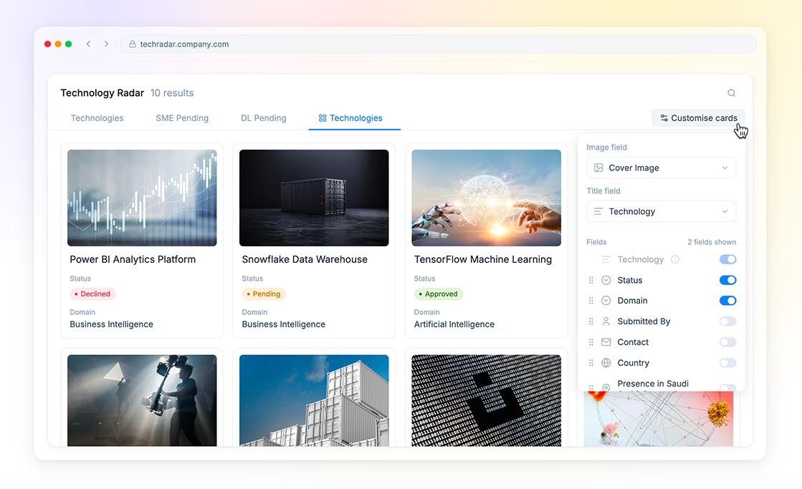
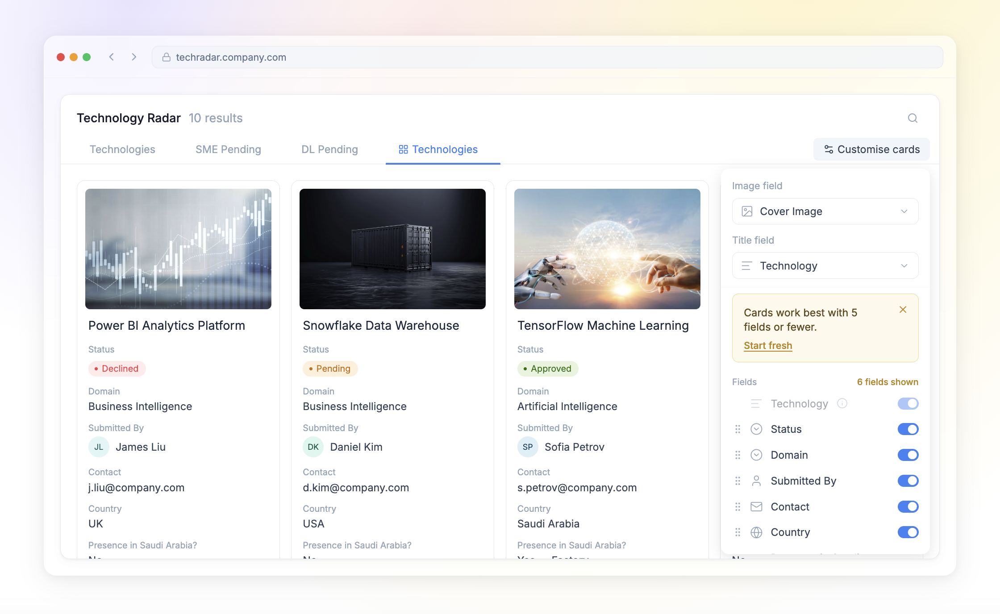
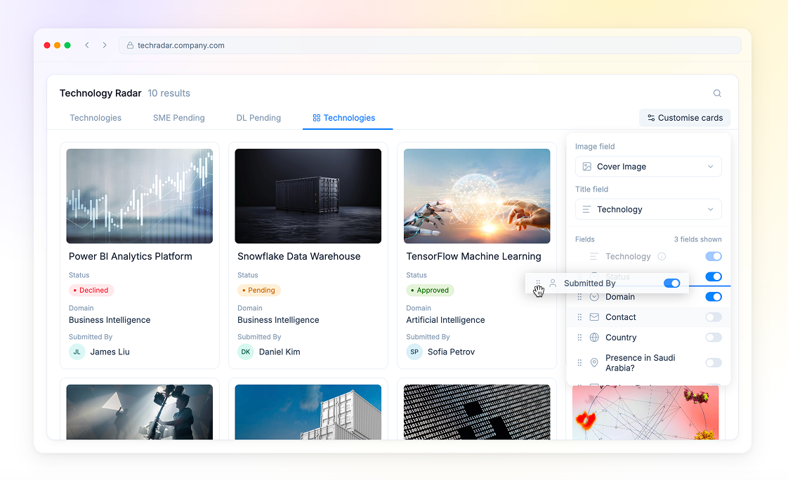
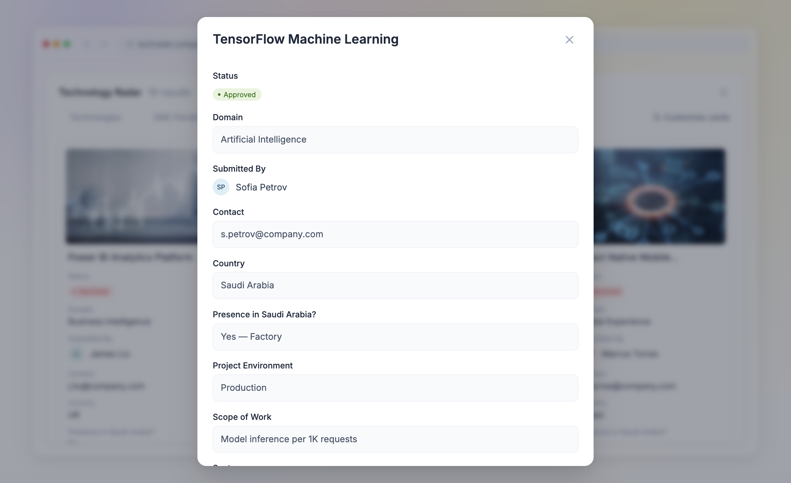

Technology Radar — Gallery View
Reframing a data table around how users actually work
The situation
We had an existing data table application already in production. When a new client came on board, they flagged early that the table wasn't working for their team. Rather than taking that at face value, we ran user interviews to understand why — and found a more fundamental mismatch between the tool and how their users actually worked.
Rebuilding from scratch wasn't an option — limited time, existing codebase. The constraint forced a smarter question: what does this client actually need, and how do we deliver it within what we already have?

One data model, three different users
Interviews revealed three distinct touchpoints in the same product:
- Submitters fill a structured form to propose a technology. Their job ends at submission. They never see the table.
- Data managers work with the table directly — reviewing, organising, managing records. The table was already built for them.
- Browsers evaluate submitted technologies to decide what to adopt. They're not managing data — they're making decisions.
The product was already serving submitters and data managers well. The new client introduced browsers — a user type the existing product had never been designed for. That was the real problem the client couldn't fully articulate.
The core insight
Browsers had one job: scan a list, identify what deserves attention, move on. The table forced them to read across rows and mentally filter columns — work they shouldn't have to do.
The client knew something felt wrong. The interviews told us why.
The same data, presented differently, could serve a completely different job. We didn't need a new product. We needed a new view.
The transition
The solution had to work within the existing product without disrupting what data managers already had. Adding a new tab with gallery view as the view type meant exactly that — nothing changed for existing users. Data managers kept their table tabs untouched. Browsers got a dedicated space built for how they actually work.

Each gallery tab represents a specific stage in the review process — browsers only see what's relevant to them at that moment rather than the entire dataset at once.

The decision
A gallery view matches how browsers actually think. By default each card surfaces three things: the technology name, its category, and its internal review status. Status tells browsers immediately where something sits in the buying process — approved, pending, declined — without opening a single record.
Everything else is off by default. Scannability was the entire point.

Giving editors control without breaking the experience
Editors needed flexibility to customise what appeared on cards. But unconstrained flexibility would let them undo the very thing that made the gallery useful — so we built guardrails into the customisation itself.


The cover image appears on cards for visual scanning in the grid. It is deliberately removed from the detail view — once a browser opens a record they are reading, not scanning.

Built on top, not from scratch
The constraint turned out to be the point. Because we couldn't rebuild, we had to understand the problem precisely enough to solve it with the minimum possible change. One new view was enough.
Reflection
[PLACEHOLDER — 2–3 sentences about what this project taught me, a principle I took away, or a question it raised that I'm still thinking about.]